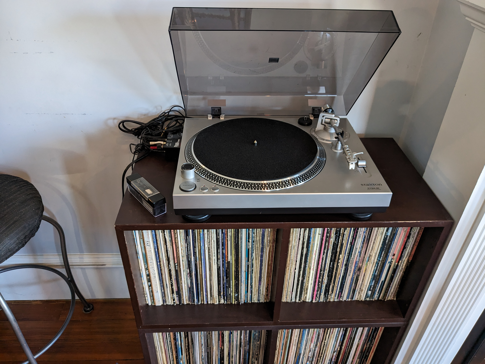
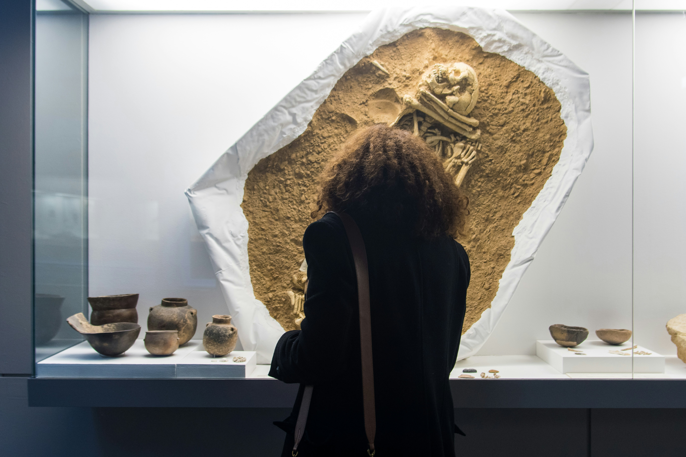
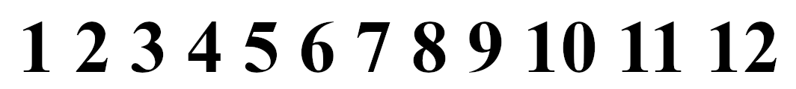

How playing a record on a turntable can enhance your digital listening.
Album listeners enjoy an enhanced musical experience. If you listen to
physical record albums, then you know there is no real digital facsimile,
and there probably won't ever be. That sticker-sized pic of the album cover
on your phone kind of summarizes the situation. It also hints of more to
consider. What aspects of playing a record album might be applied to
enhance your digital listening experience?

Ritual
Ritual preparation matters. Taking an album out of the sleeve, putting
the sleeve somewhere, placing the record on the turntable, cleaning the dust
off, getting the needle in the groove, then settling in to listen as the
sound starts. You're already enjoying your listening more because your mind
has moved to a listening state through associated ritual.
The altar of a turntable with associated trappings is obviously a big
help in this process, but when that's not around, there are still things you
can do to frame your listening:
- Finding your space. When you are by your turntable and albums,
you're home. When you're not, notice where you are and find yourself there.
- Starting your equipment. Powering up the turntable rig is a
powerful step in preparing to listen. Consciously opening your earbuds case
or putting your headphones on can also help prepare your mind.
- Accessing your library. Your album collection affirms your
identity as an active listener preparing to hear. Let your digital
collection do that also, even it just looks like a pile of files.
- Selecting an album. Choosing what to play affirms both your
agency as an active listener and your connection to a musical work. That
happens automatically when selecting a physical record album, and it's worth
noticing when selecting a digital one.
- History. When you hold a physical record, you feel your past
and present connection to it through its weight, wear, and other physical
characteristics. When playing digital music, take a moment to notice your
history with it.
Preparing to listen enhances your listening experience.

Artifact
Artifacts matter. Physical albums connect you, the artist, everyone
involved with the album creation, and those involved with how you came to
have it. Standard digitization doesn't capture your personal patina of
ownership wear, and it loses special features like colored vinyl, messages
scratched into dead wax, added cover decorations, cutouts, back covers,
inside content, and more. Much is lost, and smaller displays further limit
interaction, but there are still things from physical album listening that
can enhance your digital experience:
- Liner notes. A well crafted writeup from a trusted expert
provides context and perspective. If you are not familiar with album
context, reading about it can enhance your appreciation.
- Lyrics. Most vocal music is enhanced by knowing the words, or
being familiar with the lyrics. The digital world is less likely to present
lyrics in the artist's handwriting, but lyrics are easy to find. Even when
they weren't included with the vinyl record.
- Cover art. The tiny pristine cover pic on a phone screen is not
the same experience as a physical album cover, but it's still worth looking
at. Covers aid memory, and the artist's visual framing provides perspective
on how they felt their work should be presented. Visual memory and framing
can both enhance your appreciation.
- Lore. Tribal knowledge you learned at the record shop cements
into memory harder when associated with your physical record album. The
digital realm has even more information. Reading and sharing stories
associated with a recording will increase your appreciation of it.
Connecting to music through artifacts enhances your listening
experience.

Presentation
Presentation matters. Playing the A side, flipping the album, playing
the B side. Hearing the album as it was presented by the artist gives
context for the music. An album is more than a collection of individual
songs, and the full presentation can enhance your digital listening in
several ways:
- Seamless transitions. Many songs are separated by silence, but
some albums have songs with seamless transitions that play with audible gaps
when listening to the digital album. If you own your digital music, you
can avoid this distracting behavior by combining the connected songs into a
single track using audio editing software like Audacity or similar.
- Spacing. With digital song sequencing, there can sometimes be
distractingly more or less silence than there should be at the end of a
song. If you notice that, make a note to adjust it next time you are editing
things. Future you will appreciate it.
- Avoid shuffle. Shuffling is an intentional loss of song
context, which is rarely an improvement. It's better to listen to
individual songs across multiple albums, or select a different album to play.
- Personal copy. Sometimes you really want the sound of your own
vinyl. Maybe it's a particular mix, or maybe you want to carry the analog
sound of your personal record album copy into your digital life. Whatever
your reasons, it is ok to record your own record album to enjoy while
away from turntable.
Song commenting is a great way to record your own observations, remember
any lore you have discovered, or leave yourself a fixit note. I use
"recfix" as a search marker for anything that needs editing attention.
Preserving album presentation can enhance your listening experience.
Perspective
When your digital album is a separate recording, it provides a different
perspective. The engineering sorcery that optimized your analog record is
different from the sorcery that optimized it for digital listening. Your
record has analog grit, your digital version is clean as a studio master.
The record reflects your personal history and use, while the digital album
can be like visiting the studio where the recording was made. One informs
the other, and each can enhance the experience of the other.
Let your experience playing a record on a turntable enhance your
experience listening to a digital album.